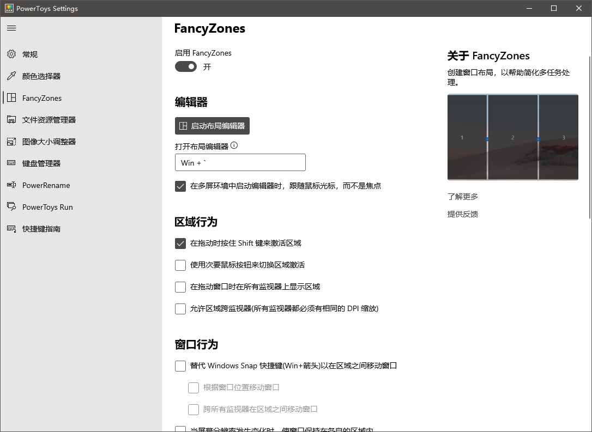

好物分享¶
自己喜欢啥，总要一遍一遍和朋友介绍，感觉比较麻烦，这样汇总一下，方便朋友一次性安利。
ps. 每个工具其实在B站都有视屏科普，大佬们也可以上B站看看。
硬件¶
键盘： Anne pro 2¶
全键自定义
tap key: 支持轻触方向键
magic key: CaspLk 也可以自定义设置为FN键
键盘宏
自定义rgb
type-C 充电
USB + 蓝牙双模
四蓝牙连接
* 带电量显示: Fn2 + 8

缺点是没有静音版本，选了红轴默认不按到底，勉勉强强声音不大。
有个注意点是，当线连接电脑，没关掉蓝牙的话，默认还是蓝牙输入输出，线支持充电。
鼠标: 罗技M590¶
静音，用电久，自定义鼠标滚轮左右方向，双蓝牙，多设备支持Logitech Flow，缺点是不好看。
鼠标: 罗技M720¶
同上款，自定义按键更多，据说有二三十个。缺点是不静音。
软件¶
ps.本人是全windows开发。
伪Linux系统¶

wsl2支持docker了，cmder配上个炫酷的半透明界面，oh my zsh 自带各种插件好用的哼，一套下来，windows变Linux，并且pycharm支持基于wsl开发，巴适得很。
关于sz rz 传输 我这里有个解决方案。
办公套件 to do list + outlook¶

待办不管是上班还是平时都用得上。
outlook支持将邮件自动转入待办 (windows客户端)。
这里有份参考
顺便说一下，outlook的日历管理也很香。
手机日历上选择Exchange导入方式导入日历，就手机端和电脑端同步了。
分屏利器 PowerToys¶

这个每个帖子都讲烂了，自己看把。
顺便说说windows虚拟桌面(部分小伙伴不知道)
windows + ctrl + d 创建桌面
windows + ctrl + f4 删除桌面
windows + ctrl +方向键 快速移动
好了恭喜你拥有了无数个虚拟桌面。可以给桌面命名，把摸鱼桌面，学习桌面，工作桌面，看板桌面分开。
网站¶
todo